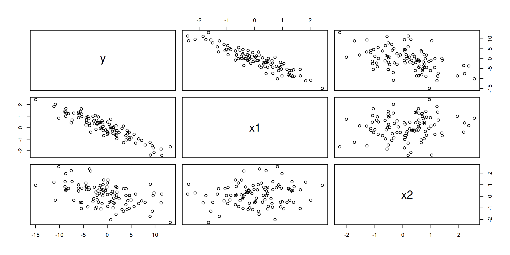
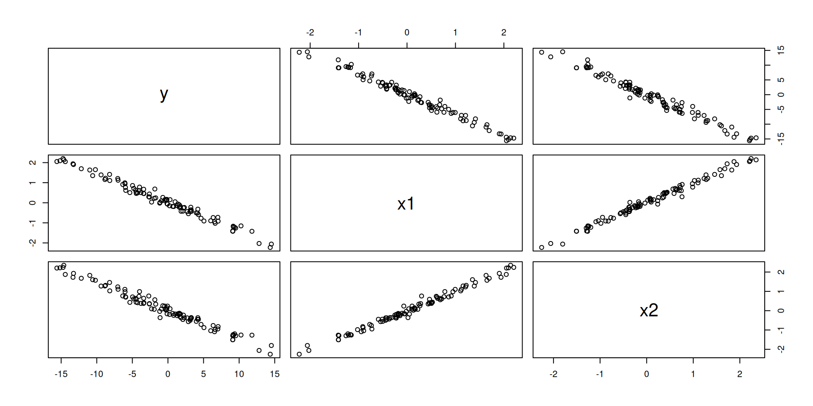
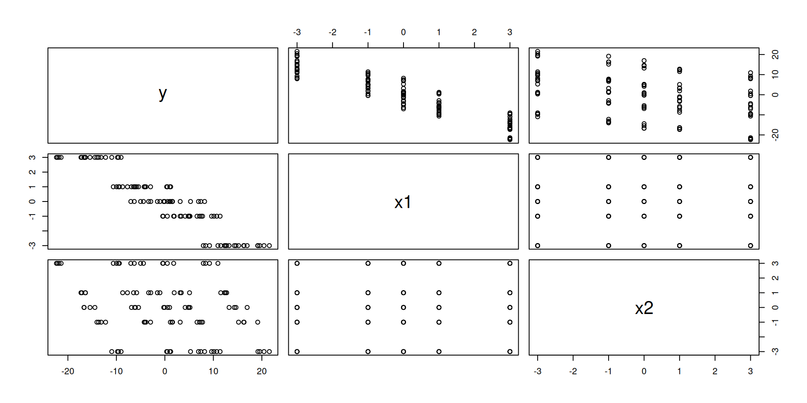

Regression Adjustments
Study: Meadowfoam
Meadowfoam is a flowering California native plant.
Can we effect the number of flowers produced by plants by providing extra light treatment, which varies in its intensity as well as it’s timing?


A model for a categorical and continuous effect (ANCOVA):
\[ y_{ij} = \mu + \alpha_i + \beta_1 x_{ij} + \epsilon_{ij} \]
Each group has a linear model with the same effect on \(x\) and different effect on the categorical effect (two intercepts).
\[\begin{align} y_{i1} &= \mu + \alpha_1 + \beta_1 x_{i1} + \epsilon_{i1} = \mu_1 + \beta_1 x_{i1} + \epsilon_{i1} \\ y_{i2} &= \mu + \alpha_2 + \beta_1 x_{i2} + \epsilon_{i2} = \mu_2 + \beta_1 x_{i2} + \epsilon_{i2} \end{align}\]
Regression Adjustments
Meadowfoam
# A tibble: 24 × 6
FLOWERS TIME INTENS intensity flowers time
<dbl> <dbl> <dbl> <dbl> <dbl> <chr>
1 62.3 1 150 150 62.3 late
2 77.4 1 150 150 77.4 late
3 55.3 1 300 300 55.3 late
4 54.2 1 300 300 54.2 late
5 49.6 1 450 450 49.6 late
6 61.9 1 450 450 61.9 late
7 39.4 1 600 600 39.4 late
8 45.7 1 600 600 45.7 late
9 31.3 1 750 750 31.3 late
10 44.9 1 750 750 44.9 late
# ℹ 14 more rowsLet’s say that only timing was randomly assigned and intensity was another variable that was recorded that we know is a good predictor of flowers.
Call:
lm(formula = flowers ~ intensity + time, data = meadowfoam)
Residuals:
Min 1Q Median 3Q Max
-9.652 -4.139 -1.558 5.632 12.165
Coefficients:
Estimate Std. Error t value Pr(>|t|)
(Intercept) 77.385000 2.998156 25.811 < 2e-16 ***
intensity -0.040471 0.005132 -7.886 1.04e-07 ***
time1 6.079166 1.314779 4.624 0.000146 ***
---
Signif. codes: 0 '***' 0.001 '**' 0.01 '*' 0.05 '.' 0.1 ' ' 1
Residual standard error: 6.441 on 21 degrees of freedom
Multiple R-squared: 0.7992, Adjusted R-squared: 0.78
F-statistic: 41.78 on 2 and 21 DF, p-value: 4.786e-08
Call:
lm(formula = flowers ~ intensity, data = meadowfoam)
Residuals:
Min 1Q Median 3Q Max
-15.7314 -7.8052 0.0186 6.1857 13.2686
Coefficients:
Estimate Std. Error t value Pr(>|t|)
(Intercept) 77.385000 4.161186 18.597 6.06e-15 ***
intensity -0.040471 0.007123 -5.682 1.03e-05 ***
---
Signif. codes: 0 '***' 0.001 '**' 0.01 '*' 0.05 '.' 0.1 ' ' 1
Residual standard error: 8.94 on 22 degrees of freedom
Multiple R-squared: 0.5947, Adjusted R-squared: 0.5763
F-statistic: 32.28 on 1 and 22 DF, p-value: 1.03e-05Analysis of Variance Table
Model 1: flowers ~ intensity
Model 2: flowers ~ intensity + time
Res.Df RSS Df Sum of Sq F Pr(>F)
1 22 1758.19
2 21 871.24 1 886.95 21.379 0.0001464 ***
---
Signif. codes: 0 '***' 0.001 '**' 0.01 '*' 0.05 '.' 0.1 ' ' 1Cautions
When fitting regression models to experimental data:
- Non-experimental variables have no causal interpretation.
- Regression adjustments generally should not be used in very small datasets (\(N < 20\)) because df are better spent estimating causal effects.
Collinearity
Simulated data with two explanatory variables.
# A tibble: 100 × 3
y x1 x2
<dbl> <dbl> <dbl>
1 0.0963 0.495 -0.870
2 -8.85 1.42 0.827
3 2.47 -0.423 -0.208
4 -6.01 0.865 0.988
5 11.3 -1.86 -0.563
6 -1.09 0.626 -0.632
7 -2.70 0.332 0.782
8 1.35 0.0630 -0.163
9 2.00 -0.956 0.762
10 -0.933 0.101 0.559
# ℹ 90 more rows
y x1 x2
y 1.000000 -0.9219270 -0.4802380
x1 -0.921927 1.0000000 0.1503897
x2 -0.480238 0.1503897 1.0000000Collinearity: describes the presence of linear relationships between the explanatory variables.
Results from Linear Models
\[ \hat{\boldsymbol{\beta}} = (\mathbf{X}^\top \mathbf{X})^{-1} \mathbf{X}^\top \mathbf{y} \]
\[ Var(\hat{\boldsymbol{\beta}}) = \sigma^2 (\mathbf{X}^\top \mathbf{X})^{-1} \]
\[ Var(\hat{\beta}_j) = \frac{\sigma^2}{(n-1) Var(X_j)} \cdot \frac{1}{1 - R^2_j} \]
where \(R_2_j\) is the \(R^2\) from regression \(X_j\) on other \(X\). The second term is called the Variance Inflation Factor (VIF).
Weak Collinearity
Call:
lm(formula = y ~ x1 + x2, data = weak_collinearity)
Residuals:
Min 1Q Median 3Q Max
-2.29590 -0.83827 0.05631 0.68765 2.03869
Coefficients:
Estimate Std. Error t value Pr(>|t|)
(Intercept) 0.01615 0.09858 0.164 0.87
x1 -4.86001 0.10054 -48.338 <2e-16 ***
x2 -2.06931 0.10649 -19.432 <2e-16 ***
---
Signif. codes: 0 '***' 0.001 '**' 0.01 '*' 0.05 '.' 0.1 ' ' 1
Residual standard error: 0.9747 on 97 degrees of freedom
Multiple R-squared: 0.9693, Adjusted R-squared: 0.9687
F-statistic: 1533 on 2 and 97 DF, p-value: < 2.2e-16This linear model corresponds to a plane in 3D.
Strong Collinearity
# A tibble: 100 × 3
y x1 x2
<dbl> <dbl> <dbl>
1 -4.80 0.715 0.612
2 10.3 -1.15 -1.26
3 -8.20 1.41 1.46
4 6.55 -0.945 -1.09
5 14.5 -2.06 -1.80
6 -5.93 0.617 0.700
7 -14.4 2.05 1.87
8 1.00 0.0495 -0.174
9 -2.61 0.436 0.348
10 -7.00 1.12 1.11
# ℹ 90 more rowsStrong Collinearity

Strong collinearity
y x1 x2
y 1.0000000 -0.9903937 -0.9860524
x1 -0.9903937 1.0000000 0.9923999
x2 -0.9860524 0.9923999 1.0000000Designed Experiment
# A tibble: 100 × 3
y x1 x2
<dbl> <dbl> <dbl>
1 19.6 -3 -3
2 10.1 -1 -3
3 8.19 0 -3
4 1.20 1 -3
5 -11.0 3 -3
6 19.1 -3 -1
7 7.14 -1 -1
8 1.49 0 -1
9 -4.14 1 -1
10 -14.0 3 -1
# ℹ 90 more rowsDesigned Experiment

Design Experiment
y x1 x2
y 1.0000000 -0.9323337 -0.3490678
x1 -0.9323337 1.0000000 0.0000000
x2 -0.3490678 0.0000000 1.0000000